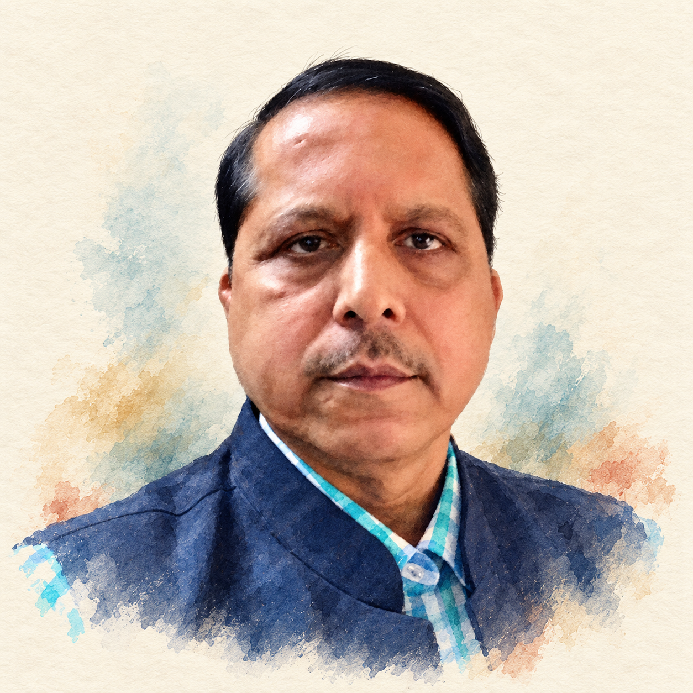
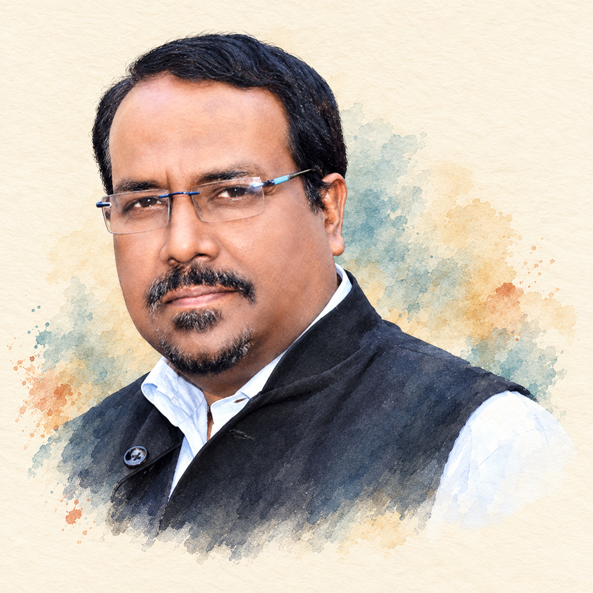
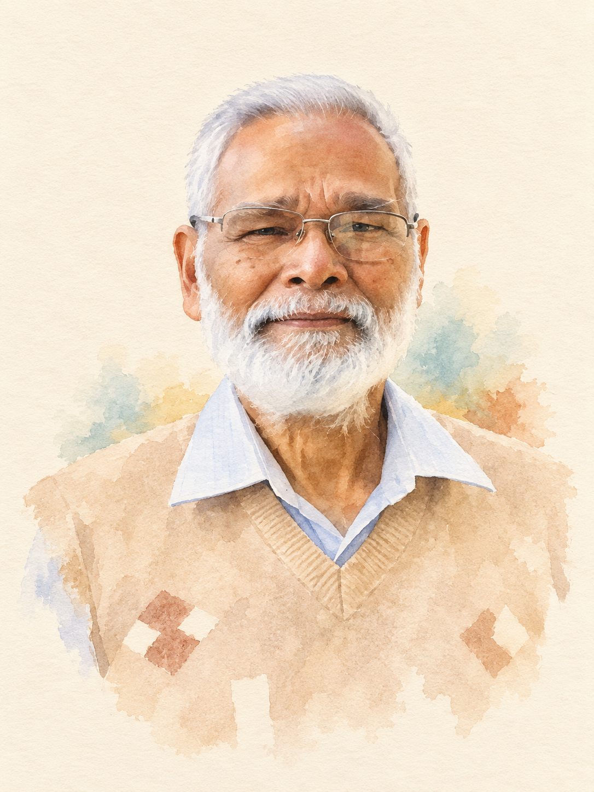

Pradeep Biswal

Source pose, facial asymmetry, small moustache, expression, navy vest and checked shirt retained. Quieter paper and selective watercolor edges; forehead and under-eye light remain naturally uneven. No material identity drift seen in self-review.
Portrait master · Exact prompt
Paresh Kumar Pattnaik

Broad facial shape, three-quarter angle, blue-detail rectangular glasses, moustache/goatee, dark vest and pale shirt retained. Background washes reduced and watercolor shoulder edges softened. Source resolution limits fine-detail certainty; independent likeness review remains pending.
Portrait master · Exact prompt
Pravakar Satapathy

Compared with far-right man in user-identified family photo: short white hair, glasses, closed-mouth expression, white beard, pale blue collar and beige diamond sweater retained. Corrected candidate uses soft painted beard masses and quieter skin modeling; v2 retained unused because it preserved excessive etched detail. Family-photo resolution limits fine-detail certainty; independent likeness review pending.
Portrait master · Exact prompt